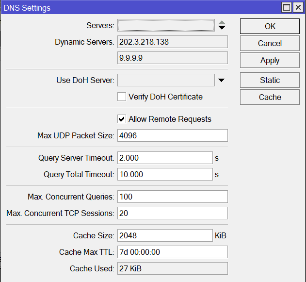
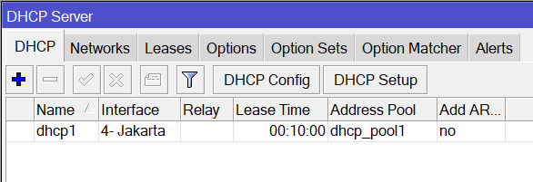

Toppologi

Identity & Security
Login pada winbox lalu pergi ke menu System> Identity untuk mengubah Identity sebuah Router

Berikan password agar tidak sembarang orang bisa Login ke Router kalian. Untuk memberi password ini ada pada menu System> Password

Jika sebelumnya belum diberikan password, maka di bagian Old Password kosongkan saja. Sebaliknya jika pada sebelumnya sudah diberikan password, maka masukan password yang sudah di apply dulu.
Selanjutnya tambahkan user untuk mengatur siapa aja yang punya kendali penuh untuk Router kalian.

Tambahkan nama user dan password sesuai selera kalian lalu atur group menjadi full agar bisa lihat dan edit. Default login router biasanya user admin yang mempunyai group full, tetapi disini kita ubah menjadi group read agar hanya bisa melihat tanpa mengedit konfigurasi. Ini juga menjadi salah satu cara untuk Security sebuah jaringan dan router.
Lalu terakhir kita login ulang dengan menggunakan user yang telah kita buat tadi.

Konfigurasi Basic
Interfaces
Konfigurasi sederhana untuk memberikan internet kepada client tanpa ada fitur yang lainnya. Pertama kita ganti nama Interface sesuai port yang ada dan digunakan untuk apa. Hal ini bertujuan agar kita tidak tertukar saat ingin konfig/mencoba tes Interface yang ada.

DHCP Client
DHCP client akan berfungsi dalam memastikan supaya perangkat yang terhubung di sebuah jaringan memperoleh alamat IP sesuai dengan yang diberikan server. Jadi kita meminta IP dari Server agar Client kita bisa mendapatkan Internet. Service DHCP Client ini berada pada menu IP> DHCP Client

IP Address
Kita berikan IP Address untuk client sesuai dengan Interface yang akan digunakan yaitu "Interface - Jakarta". Untuk memberikan IP Address pada interface, berada pada menu IP> Addresses

DNS
Centang "Allow Remote Request", hal ini memungkinkan Mikrotik menjadi DNS cache, sehingga mengarahkan DNS komputer ke IP Mikrotik untuk mengakses lebih cepat, Khusunya untuk DNS yang sudah terekam dicache Mikrotik. Service ini ada pada menu IP> DNS
Firewall
Salah satu fitur firewall yang ada pada Mikrotik adalah Filter rules. Filter rule berfungsi membuat kriteria pada paket/data yang keluar ataupun masuk lalu mengeksekusi nya dengan Action yang berbeda-beda.
- "Foward" adalah paket data yang melewati router. Contoh kasusnya adalah ketika 2 computer yang saling terhubung dengan router melakukan PING satu sama lain.
- "Accept" ini berfungsi melakukan persetujuan pada paket.

Service ini berada pada menu IP> Firewall dan masuk dibagian "Filter Rules"
Setelah itu kita pindah ke bagian "NAT"
- "Masquerade" berfungsi untuk menyembunyian IP address privat yang ada pada jaringan LAN sekaligus membuat mask (berlindung/bersembunyi) ke IP address yang terhubung langsung ke router ISP, sehingga IP address privat tadi tidak terlihat oleh jaringan internet (publik).
- "Src-nat" digunakan untuk menghubungka jaringan local ke internet menggunakan IP public static.

DHCP Server
DHCP memiliki fungsi utama mendistribusikan IP Address secara otomatis kepada setiap client yang terhubung dengan jaringan komputer.Service ini berada di menu IP> DHCP Server. Kita pilih interface yang akan diberikan service DHCP Server ini untuk memberikan IP otomatis kepada client
Hasil
Hubungkan PC dengan kabel ke interface yang telah kita berikan IP dan DHCP Server tadi.